Across the Great Unknown: Hiking the Grand Canyon Rim-To-Rim post-Dragon Bravo
May 21-22, 2026
Published on June 12, 2026
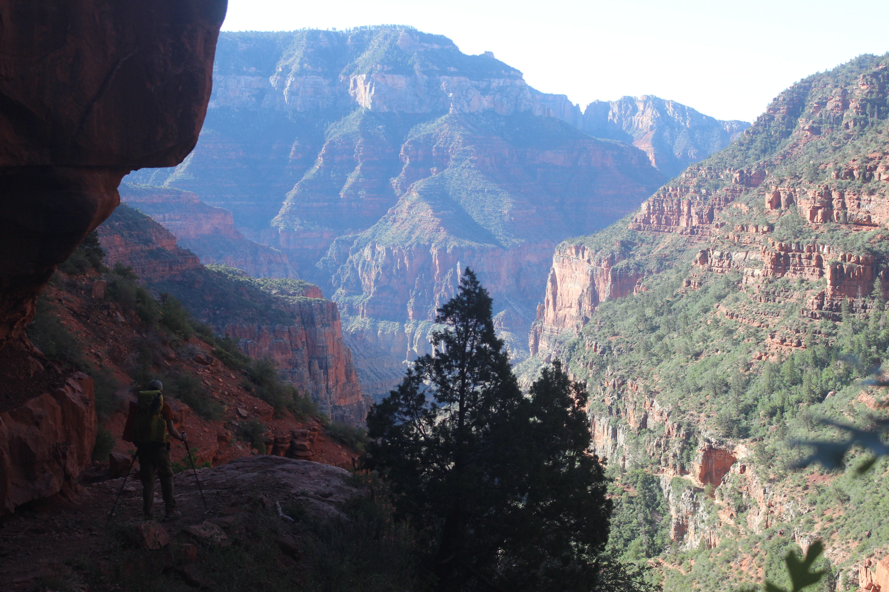
For well over the past year, me and my friend Ethan have been committed to hiking across the Grand Canyon rim-to-rim. I remember first seriously considering it before last summer. I started to logistically plan the trip—what all I would need, including permits and gear. My plan was to begin the hike on the North Rim of the Grand Canyon, descend down to the Colorado River, camp, and then ascend up the South Rim the following morning. In early July, however, I read headlines that really worried me.
A fire, named Dragon Bravo, had broken out on the Kaibab Plateau (the uplift containing the North Rim) on July 4, 2025. Initially caused by a lightning strike, federal authorities decided to contain the fire and let it burn in a controlled manner, but the winds unexpectedly picked up about a week later and the fire began to rapidly expand. Over the next few days, Dragon Bravo would prompt evacuations from the North Rim all the way down to the bottom of the canyon at Phantom Ranch, some 6,000 vertical feet below. The fire eventually got so out of control that the North Rim Visitor Center and historic Grand Canyon Lodge were completely destroyed. The North Rim was definitively closed for the rest of the season and possibly much longer.
A quick disclaimer: This is not an article on wildfire management or the fire itself. I am not qualified to discuss this particular fire, or any wildfire for that matter, but I did witness its destruction on the landscape at the North Rim.
Fast forward to January 2026. We wanted to do our hike in May, but Grand Canyon National Park requires you to enter a lottery months before your planned trip if you’d like a permit to camp overnight below the rims. The projected timelines for the North Rim were still murky, but we decided to enter the lottery anyway. A few weeks later I was notified that I won the lottery. My initial itinerary was to hike down and back up the South Rim from May 21 to 22, but I really wanted to go across.
In March, the National Park Service (NPS) announced that the North Rim would have a limited reopening on May 15. The North Kaibab Trail that descends from the rim would open—but not much else. The visitor center and lodge had been demolished and were stripped to their foundations. Campgrounds on the North Rim would remain closed, and there would be no running water, either. I contacted NPS, and they allowed me to change my starting point to the North Kaibab Trailhead.
The plan was set, then. Me and Ethan would hike across the Grand Canyon from north to south. I drove up from Texas and parked my car at the South Rim; Ethan drove down from Washington, picked me up, and we rode to the North Rim together. We camped at Jacob Lake Campground outside the park boundary and rose early the following morning to drive to the rim and begin our hike.
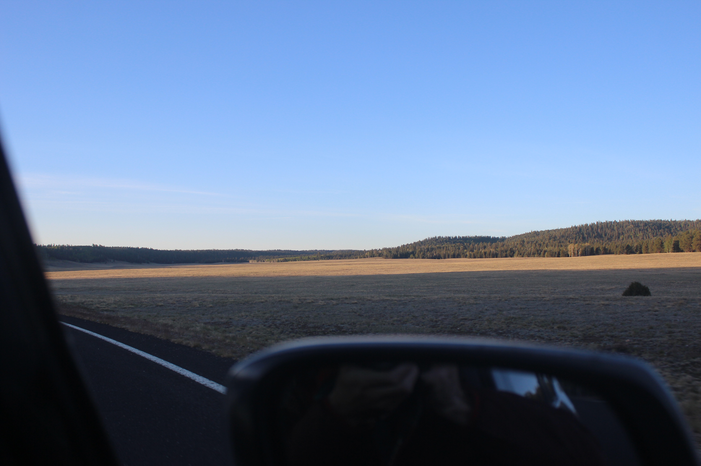
Outside the park boundary, the Kaibab Plateau is scattered with wide open meadows grazed by deer and bison. As soon as you enter the boundary, though, you are immediately greeted with the destruction from Dragon Bravo. We were over 10 miles from the ruins of the lodge. The landscape looked like a million toothpicks standing on blackened mounds made of coal. Dead trees scattered the ground by the thousands, and others had clearly been chopped down or cleared.
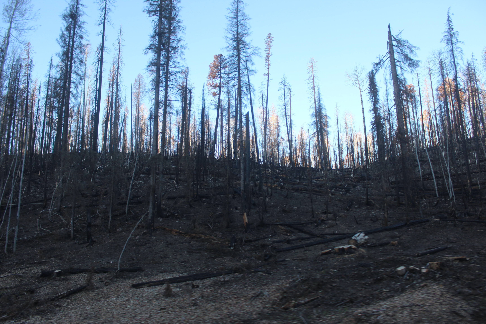
Yet the entire area was not like this: There were pockets that seemed to be entirely unaffected by the fire—areas on the same side of the road. I’m not sure if this is because of firefighting efforts or other, more natural causes. Maybe some trees fared better than others, and I was ignorant to the natural selection occurring in front of me. At the time, I didn’t process what I was seeing. It was early, and we had to hike 14 miles and descend 6,000 feet that day. There wasn’t a grand celebration to start our hike, nor did we really have a somber moment. We just went.
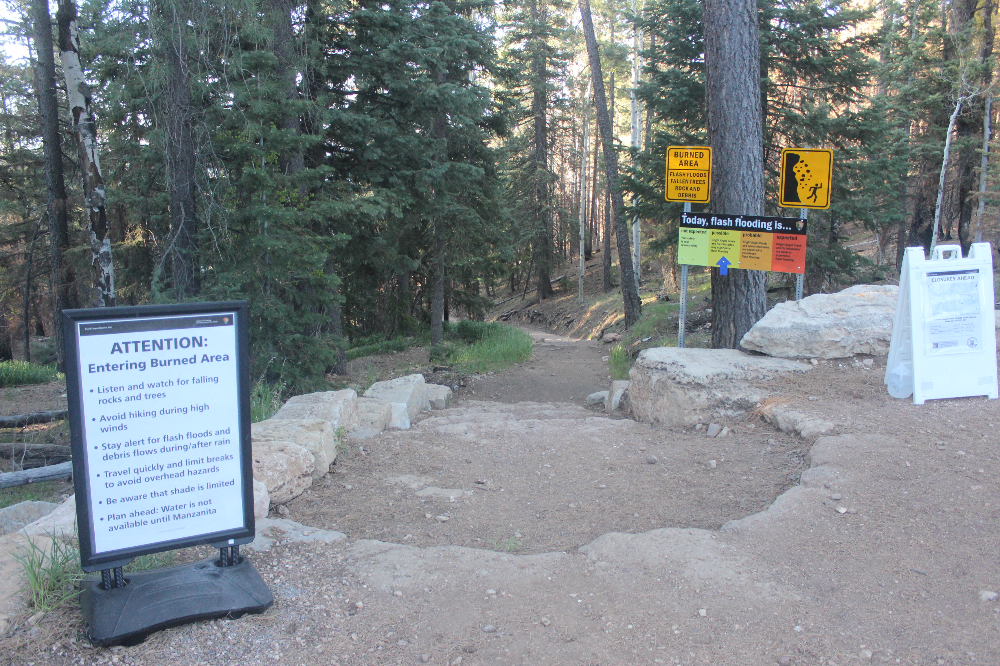
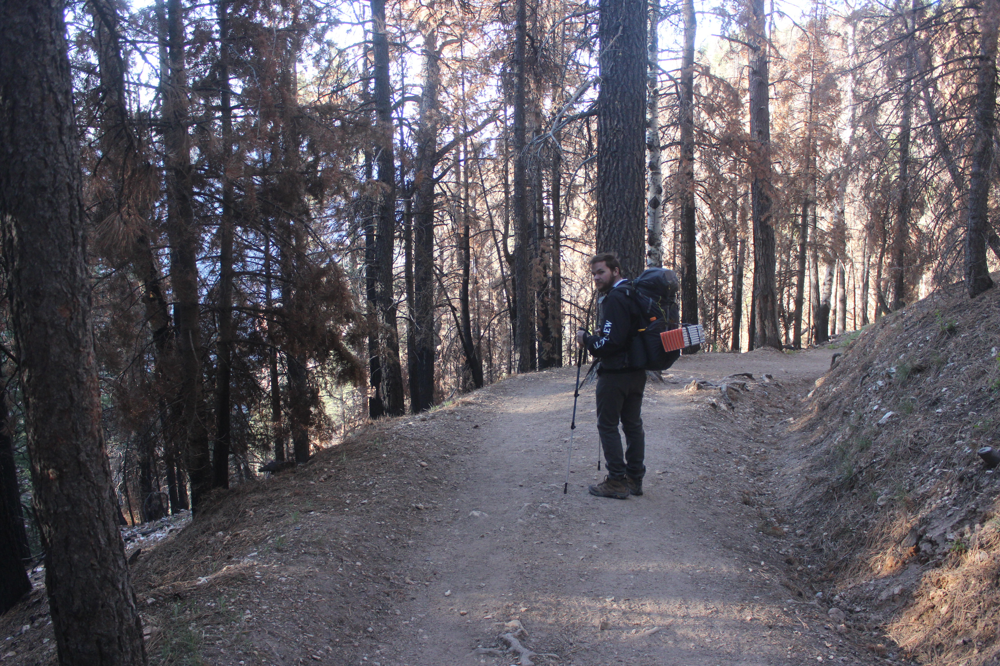
Almost instantaneously and simultaneously, my brain processed two things. The first was the high number of NPS staff repairing and maintaining the trail. I am forever grateful to the NPS staff who are doing everything in their power to work on healing the North Rim. Second, the view. The North Rim may as well be a completely different planet than its counterpart, with the canyon behaving as a cosmic space separating two distant worlds. It sits about 1,000 feet higher than the South Rim, so the ecology is completely different. You are not on a desert plain. You are in an alpine forest. It’s peaceful, remote, and quiet. It is much more difficult to reach than the South Rim, but much more rewarding. Our reward for just being there was seeing that alpine forest drop into a desert canyon and rise back up some 10 or 15 miles ahead, but since we were above the South Rim, we could see the Coconino Plateau beneath us, and serving as a backdrop to the entire scene was Mt. Humphreys, the tallest mountain in Arizona, 64 miles away.
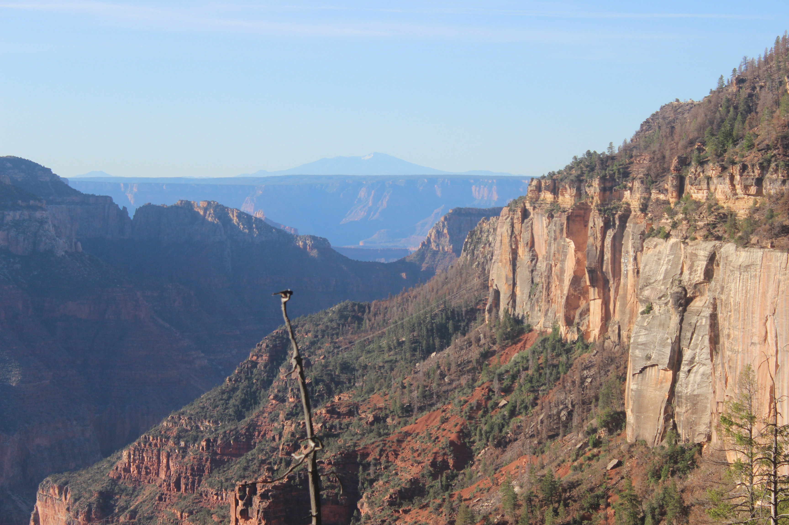
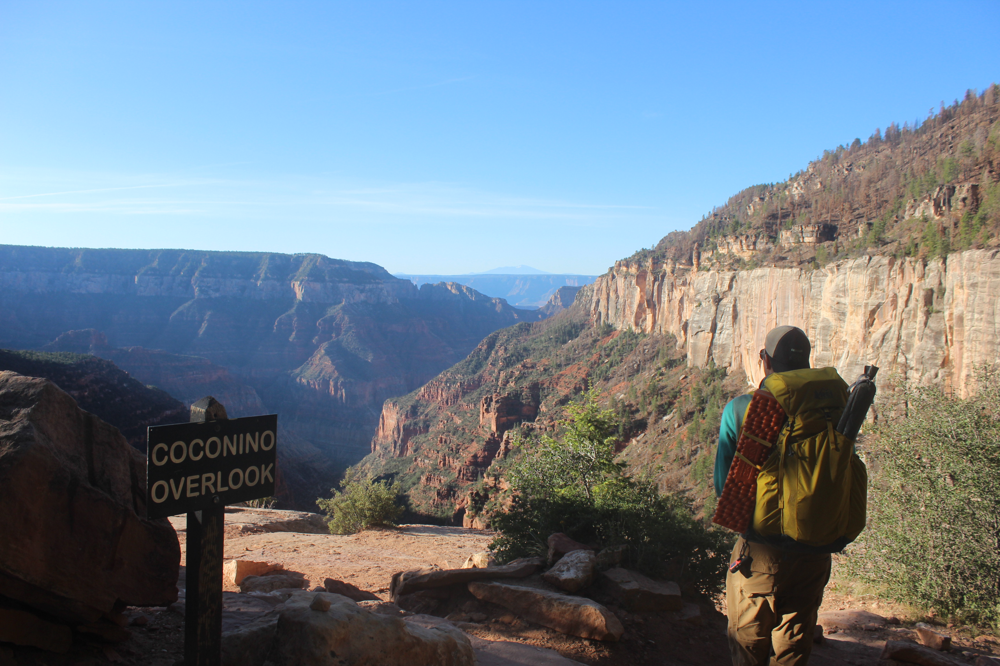
From this point until we arrive at Bright Angel Campground at Phantom Ranch, 14 miles away, words will be sparse. We had to get into a groove. We descended quickly. I would like to say that our first stop—the Manzanita Rest Area, five-and-a-half miles in—was a 3,800 foot drop. We took plenty of pictures as we descended the many layers of rock, crossed a few bridges, and clung to cliffsides.
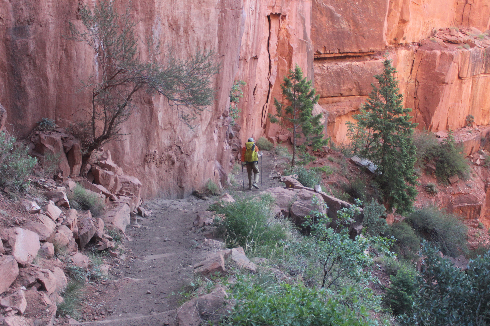
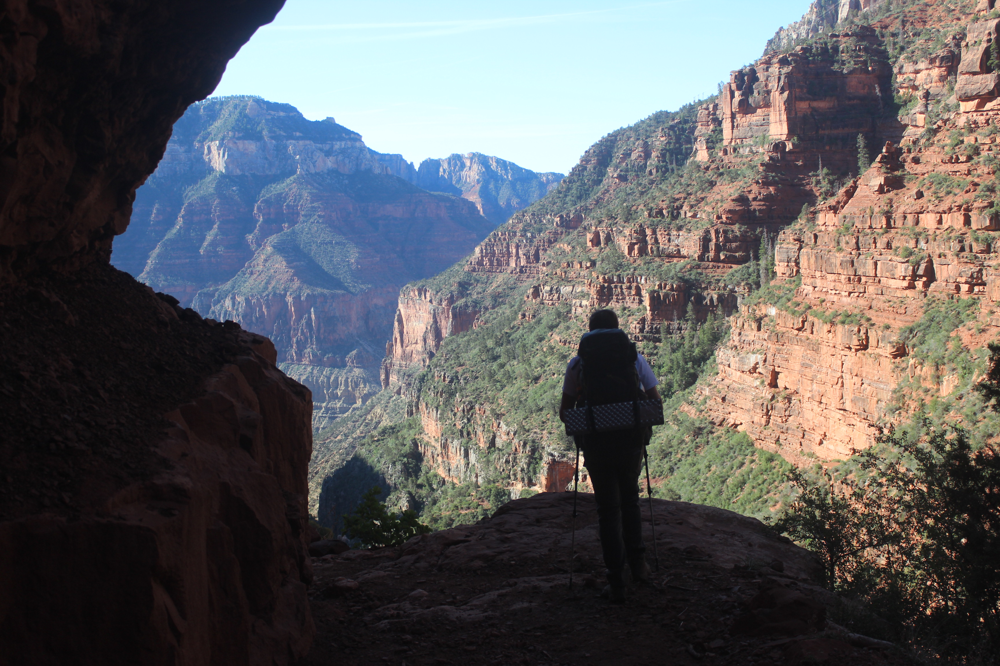
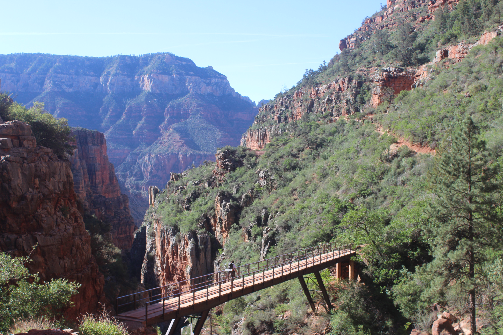
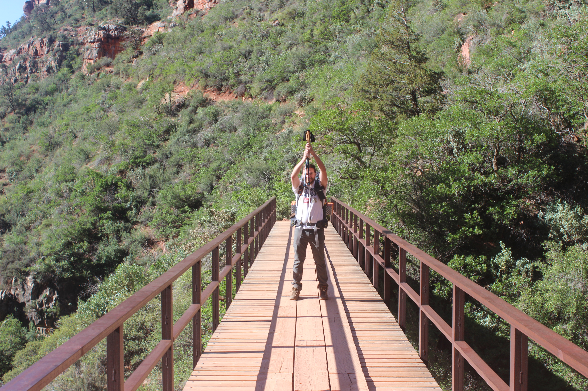
YOU SHALL NOT PASS!